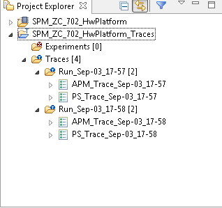

Link with Editor
The tracing projects support the Link With Editor feature of the Project Explorer view. With this feature it is now possible to:
- select a trace element in the Project Explorer view and the corresponding Events editor will get focus, if the relevant trace is open.
- select an Events editor and the corresponding trace element will be highlighted in the Project Explorer view.
To enable or disable this feature toggle the Link With Editor button of the Project Explorer view as shown below.
